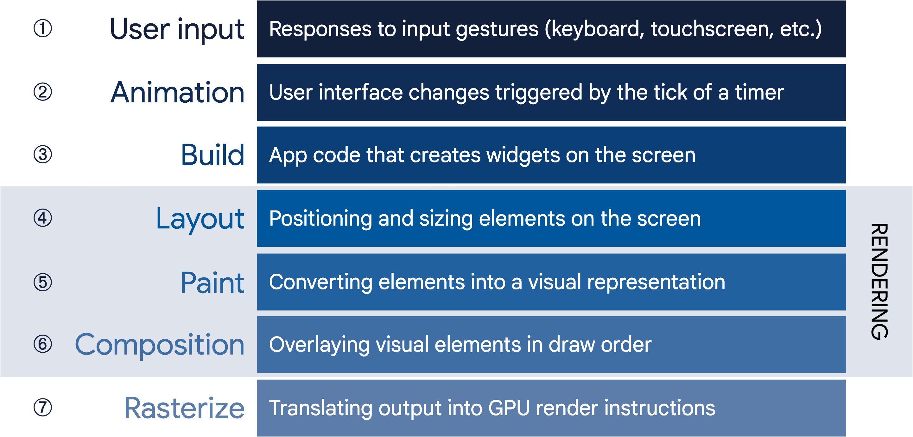
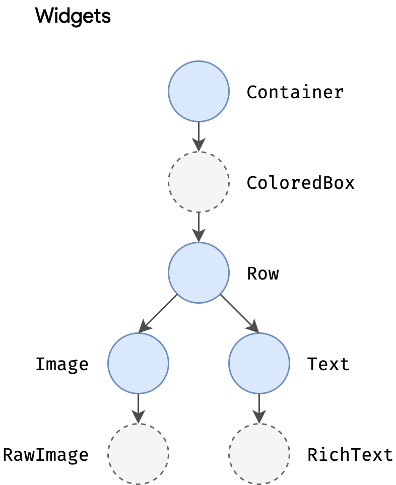
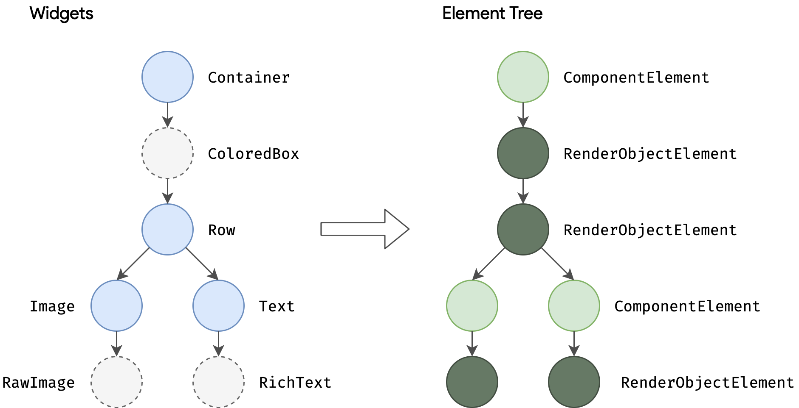
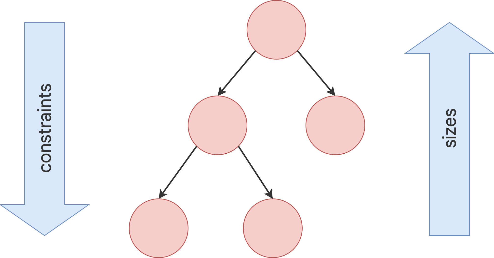
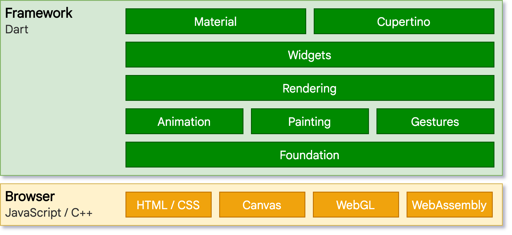

Flutter architectural overview
This article is intended to provide a high-level overview of the architecture of Flutter, including the core principles and concepts that form its design.
Flutter is a cross-platform UI toolkit that is designed to allow code reuse across operating systems such as iOS and Android, while also allowing applications to interface directly with underlying platform services. The goal is to enable developers to deliver high-performance apps that feel natural on different platforms, embracing differences where they exist while sharing as much code as possible.
During development, Flutter apps run in a VM that offers stateful hot reload of changes without needing a full recompile. For release, Flutter apps are compiled directly to machine code, whether Intel x64 or ARM instructions, or to JavaScript if targeting the web. The framework is open source, with a permissive BSD license, and has a thriving ecosystem of third-party packages that supplement the core library functionality.
This overview is divided into a number of sections:
- The layer model: The pieces from which Flutter is constructed.
- Reactive user interfaces: A core concept for Flutter user interface development.
- An introduction to widgets: The fundamental building blocks of Flutter user interfaces.
- The rendering process: How Flutter turns UI code into pixels.
- An overview of the platform embedders: The code that lets mobile and desktop OSes execute Flutter apps.
- Integrating Flutter with other code: Information about different techniques available to Flutter apps.
- Support for the web: Concluding remarks about the characteristics of Flutter in a browser environment.
Architectural layers
Flutter is designed as an extensible, layered system. It exists as a series of independent libraries that each depend on the underlying layer. No layer has privileged access to the layer below, and every part of the framework level is designed to be optional and replaceable.

To the underlying operating system, Flutter applications are packaged in the same way as any other native application. A platform-specific embedder provides an entrypoint; coordinates with the underlying operating system for access to services like rendering surfaces, accessibility, and input; and manages the message event loop. The embedder is written in a language that is appropriate for the platform: currently Java and C++ for Android, Objective-C/Objective-C++ for iOS and macOS, and C++ for Windows and Linux. Using the embedder, Flutter code can be integrated into an existing application as a module, or the code may be the entire content of the application. Flutter includes a number of embedders for common target platforms, but other embedders also exist.
At the core of Flutter is the Flutter engine, which is mostly written in C++ and supports the primitives necessary to support all Flutter applications. The engine is responsible for rasterizing composited scenes whenever a new frame needs to be painted. It provides the low-level implementation of Flutter’s core API, including graphics (through Impeller on iOS and coming to Android, and Skia on other platforms) text layout, file and network I/O, accessibility support, plugin architecture, and a Dart runtime and compile toolchain.
The engine is exposed to the Flutter framework through
dart:ui,
which wraps the underlying C++ code in Dart classes. This library
exposes the lowest-level primitives, such as classes for driving input,
graphics, and text rendering subsystems.
Typically, developers interact with Flutter through the Flutter framework, which provides a modern, reactive framework written in the Dart language. It includes a rich set of platform, layout, and foundational libraries, composed of a series of layers. Working from the bottom to the top, we have:
- Basic foundational classes, and building block services such as animation, painting, and gestures that offer commonly used abstractions over the underlying foundation.
- The rendering layer provides an abstraction for dealing with layout. With this layer, you can build a tree of renderable objects. You can manipulate these objects dynamically, with the tree automatically updating the layout to reflect your changes.
- The widgets layer is a composition abstraction. Each render object in the rendering layer has a corresponding class in the widgets layer. In addition, the widgets layer allows you to define combinations of classes that you can reuse. This is the layer at which the reactive programming model is introduced.
- The Material and Cupertino libraries offer comprehensive sets of controls that use the widget layer’s composition primitives to implement the Material or iOS design languages.
The Flutter framework is relatively small; many higher-level features that developers might use are implemented as packages, including platform plugins like camera and webview, as well as platform-agnostic features like characters, http, and animations that build upon the core Dart and Flutter libraries. Some of these packages come from the broader ecosystem, covering services like in-app payments, Apple authentication, and animations.
The rest of this overview broadly navigates down the layers, starting with the reactive paradigm of UI development. Then, we describe how widgets are composed together and converted into objects that can be rendered as part of an application. We describe how Flutter interoperates with other code at a platform level, before giving a brief summary of how Flutter’s web support differs from other targets.
Anatomy of an app
The following diagram gives an overview of the pieces
that make up a regular Flutter app generated by flutter create.
It shows where the Flutter Engine sits in this stack,
highlights API boundaries, and identifies the repositories
where the individual pieces live. The legend below clarifies
some of the terminology commonly used to describe the
pieces of a Flutter app.

Dart App
- Composes widgets into the desired UI.
- Implements business logic.
- Owned by app developer.
Framework (source code)
- Provides higher-level API to build high-quality apps (for example, widgets, hit-testing, gesture detection, accessibility, text input).
- Composites the app’s widget tree into a scene.
Engine (source code)
- Responsible for rasterizing composited scenes.
- Provides low-level implementation of Flutter’s core APIs (for example, graphics, text layout, Dart runtime).
- Exposes its functionality to the framework using the dart:ui API.
- Integrates with a specific platform using the Engine’s Embedder API.
Embedder (source code)
- Coordinates with the underlying operating system for access to services like rendering surfaces, accessibility, and input.
- Manages the event loop.
- Exposes platform-specific API to integrate the Embedder into apps.
Runner
- Composes the pieces exposed by the platform-specific API of the Embedder into an app package runnable on the target platform.
- Part of app template generated by
flutter create, owned by app developer.
Reactive user interfaces
On the surface, Flutter is a reactive, declarative UI framework, in which the developer provides a mapping from application state to interface state, and the framework takes on the task of updating the interface at runtime when the application state changes. This model is inspired by work that came from Facebook for their own React framework, which includes a rethinking of many traditional design principles.
In most traditional UI frameworks, the user interface’s initial state is described once and then separately updated by user code at runtime, in response to events. One challenge of this approach is that, as the application grows in complexity, the developer needs to be aware of how state changes cascade throughout the entire UI. For example, consider the following UI:

There are many places where the state can be changed: the color box, the hue slider, the radio buttons. As the user interacts with the UI, changes must be reflected in every other place. Worse, unless care is taken, a minor change to one part of the user interface can cause ripple effects to seemingly unrelated pieces of code.
One solution to this is an approach like MVC, where you push data changes to the model via the controller, and then the model pushes the new state to the view via the controller. However, this also is problematic, since creating and updating UI elements are two separate steps that can easily get out of sync.
Flutter, along with other reactive frameworks, takes an alternative approach to this problem, by explicitly decoupling the user interface from its underlying state. With React-style APIs, you only create the UI description, and the framework takes care of using that one configuration to both create and/or update the user interface as appropriate.
In Flutter, widgets (akin to components in React) are represented by immutable classes that are used to configure a tree of objects. These widgets are used to manage a separate tree of objects for layout, which is then used to manage a separate tree of objects for compositing. Flutter is, at its core, a series of mechanisms for efficiently walking the modified parts of trees, converting trees of objects into lower-level trees of objects, and propagating changes across these trees.
A widget declares its user interface by overriding the build() method, which
is a function that converts state to UI:
UI = f(state)
The build() method is by design fast to execute and should be free of side
effects, allowing it to be called by the framework whenever needed (potentially
as often as once per rendered frame).
This approach relies on certain characteristics of a language runtime (in particular, fast object instantiation and deletion). Fortunately, Dart is particularly well suited for this task.
Widgets
As mentioned, Flutter emphasizes widgets as a unit of composition. Widgets are the building blocks of a Flutter app’s user interface, and each widget is an immutable declaration of part of the user interface.
Widgets form a hierarchy based on composition. Each widget nests inside its
parent and can receive context from the parent. This structure carries all the
way up to the root widget (the container that hosts the Flutter app, typically
MaterialApp or CupertinoApp), as this trivial example shows:
import 'package:flutter/material.dart';
import 'package:flutter/services.dart';
void main() => runApp(const MyApp());
class MyApp extends StatelessWidget {
const MyApp({super.key});
@override
Widget build(BuildContext context) {
return MaterialApp(
home: Scaffold(
appBar: AppBar(
title: const Text('My Home Page'),
),
body: Center(
child: Builder(
builder: (context) {
return Column(
children: [
const Text('Hello World'),
const SizedBox(height: 20),
ElevatedButton(
onPressed: () {
print('Click!');
},
child: const Text('A button'),
),
],
);
},
),
),
),
);
}
}In the preceding code, all instantiated classes are widgets.
Apps update their user interface in response to events (such as a user interaction) by telling the framework to replace a widget in the hierarchy with another widget. The framework then compares the new and old widgets, and efficiently updates the user interface.
Flutter has its own implementations of each UI control, rather than deferring to those provided by the system: for example, there is a pure Dart implementation of both the iOS Toggle control and the one for the Android equivalent.
This approach provides several benefits:
- Provides for unlimited extensibility. A developer who wants a variant of the Switch control can create one in any arbitrary way, and is not limited to the extension points provided by the OS.
- Avoids a significant performance bottleneck by allowing Flutter to composite the entire scene at once, without transitioning back and forth between Flutter code and platform code.
- Decouples the application behavior from any operating system dependencies. The application looks and feels the same on all versions of the OS, even if the OS changed the implementations of its controls.
Composition
Widgets are typically composed of many other small, single-purpose widgets that combine to produce powerful effects.
Where possible, the number of design concepts is kept to a minimum while
allowing the total vocabulary to be large. For example, in the widgets layer,
Flutter uses the same core concept (a Widget) to represent drawing to the
screen, layout (positioning and sizing), user interactivity, state management,
theming, animations, and navigation. In the animation layer, a pair of concepts,
Animations and Tweens, cover most of the design space. In the rendering
layer, RenderObjects are used to describe layout, painting, hit testing, and
accessibility. In each of these cases, the corresponding vocabulary ends up
being large: there are hundreds of widgets and render objects, and dozens of
animation and tween types.
The class hierarchy is deliberately shallow and broad to maximize the possible
number of combinations, focusing on small, composable widgets that each do one
thing well. Core features are abstract, with even basic features like padding
and alignment being implemented as separate components rather than being built
into the core. (This also contrasts with more traditional APIs where features
like padding are built in to the common core of every layout component.) So, for
example, to center a widget, rather than adjusting a notional Align property,
you wrap it in a Center
widget.
There are widgets for padding, alignment, rows, columns, and grids. These layout widgets do not have a visual representation of their own. Instead, their sole purpose is to control some aspect of another widget’s layout. Flutter also includes utility widgets that take advantage of this compositional approach.
For example, Container, a
commonly used widget, is made up of several widgets responsible for layout,
painting, positioning, and sizing. Specifically, Container is made up of the
LimitedBox,
ConstrainedBox,
Align,
Padding,
DecoratedBox, and
Transform widgets, as you
can see by reading its source code. A defining characteristic of Flutter is that
you can drill down into the source for any widget and examine it. So, rather
than subclassing Container to produce a customized effect, you can compose it
and other widgets in novel ways, or just create a new widget using
Container as inspiration.
Building widgets
As mentioned earlier, you determine the visual representation of a widget by
overriding the
build() function to
return a new element tree. This tree represents the widget’s part of the user
interface in more concrete terms. For example, a toolbar widget might have a
build function that returns a horizontal
layout of some
text and
various
buttons. As needed,
the framework recursively asks each widget to build until the tree is entirely
described by concrete renderable
objects. The
framework then stitches together the renderable objects into a renderable object
tree.
A widget’s build function should be free of side effects. Whenever the function is asked to build, the widget should return a new tree of widgets1, regardless of what the widget previously returned. The framework does the heavy lifting work to determine which build methods need to be called based on the render object tree (described in more detail later). More information about this process can be found in the Inside Flutter topic.
On each rendered frame, Flutter can recreate just the parts of the UI where the
state has changed by calling that widget’s build() method. Therefore it is
important that build methods should return quickly, and heavy computational work
should be done in some asynchronous manner and then stored as part of the state
to be used by a build method.
While relatively naïve in approach, this automated comparison is quite effective, enabling high-performance, interactive apps. And, the design of the build function simplifies your code by focusing on declaring what a widget is made of, rather than the complexities of updating the user interface from one state to another.
Widget state
The framework introduces two major classes of widget: stateful and stateless widgets.
Many widgets have no mutable state: they don’t have any properties that change
over time (for example, an icon or a label). These widgets subclass
StatelessWidget.
However, if the unique characteristics of a widget need to change based on user
interaction or other factors, that widget is stateful. For example, if a
widget has a counter that increments whenever the user taps a button, then the
value of the counter is the state for that widget. When that value changes, the
widget needs to be rebuilt to update its part of the UI. These widgets subclass
StatefulWidget, and
(because the widget itself is immutable) they store mutable state in a separate
class that subclasses State.
StatefulWidgets don’t have a build method; instead, their user interface is
built through their State object.
Whenever you mutate a State object (for example, by incrementing the counter),
you must call setState()
to signal the framework to update the user interface by calling the State’s
build method again.
Having separate state and widget objects lets other widgets treat both stateless and stateful widgets in exactly the same way, without being concerned about losing state. Instead of needing to hold on to a child to preserve its state, the parent can create a new instance of the child at any time without losing the child’s persistent state. The framework does all the work of finding and reusing existing state objects when appropriate.
State management
So, if many widgets can contain state, how is state managed and passed around the system?
As with any other class, you can use a constructor in a widget to initialize its
data, so a build() method can ensure that any child widget is instantiated
with the data it needs:
@override
Widget build(BuildContext context) {
return ContentWidget(importantState);
}
As widget trees get deeper, however, passing state information up and down the
tree hierarchy becomes cumbersome. So, a third widget type,
InheritedWidget,
provides an easy way to grab data from a shared ancestor. You can use
InheritedWidget to create a state widget that wraps a common ancestor in the
widget tree, as shown in this example:

Whenever one of the ExamWidget or GradeWidget objects needs data from
StudentState, it can now access it with a command such as:
final studentState = StudentState.of(context);
The of(context) call takes the build context (a handle to the current widget
location), and returns the nearest ancestor in the
tree
that matches the StudentState type. InheritedWidgets also offer an
updateShouldNotify() method, which Flutter calls to determine whether a state
change should trigger a rebuild of child widgets that use it.
Flutter itself uses InheritedWidget extensively as part of the framework for
shared state, such as the application’s visual theme, which includes
properties like color and type
styles that are
pervasive throughout an application. The MaterialApp build() method inserts
a theme in the tree when it builds, and then deeper in the hierarchy a widget
can use the .of() method to look up the relevant theme data, for example:
Container(
color: Theme.of(context).secondaryHeaderColor,
child: Text(
'Text with a background color',
style: Theme.of(context).textTheme.titleLarge,
),
);This approach is also used for Navigator, which provides page routing; and MediaQuery, which provides access to screen metrics such as orientation, dimensions, and brightness.
As applications grow, more advanced state management approaches that reduce the
ceremony of creating and using stateful widgets become more attractive. Many
Flutter apps use utility packages like
provider, which provides a wrapper around
InheritedWidget. Flutter’s layered architecture also enables alternative
approaches to implement the transformation of state into UI, such as the
flutter_hooks package.
Rendering and layout
This section describes the rendering pipeline, which is the series of steps that Flutter takes to convert a hierarchy of widgets into the actual pixels painted onto a screen.
Flutter’s rendering model
You may be wondering: if Flutter is a cross-platform framework, then how can it offer comparable performance to single-platform frameworks?
It’s useful to start by thinking about how traditional
Android apps work. When drawing,
you first call the Java code of the Android framework.
The Android system libraries provide the components
responsible for drawing themselves to a Canvas object,
which Android can then render with Skia,
a graphics engine written in C/C++ that calls the
CPU or GPU to complete the drawing on the device.
Cross-platform frameworks typically work by creating an abstraction layer over the underlying native Android and iOS UI libraries, attempting to smooth out the inconsistencies of each platform representation. App code is often written in an interpreted language like JavaScript, which must in turn interact with the Java-based Android or Objective-C-based iOS system libraries to display UI. All this adds overhead that can be significant, particularly where there is a lot of interaction between the UI and the app logic.
By contrast, Flutter minimizes those abstractions, bypassing the system UI widget libraries in favor of its own widget set. The Dart code that paints Flutter’s visuals is compiled into native code, which uses Skia (or, in the future, Impeller) for rendering. Flutter also embeds its own copy of Skia as part of the engine, allowing the developer to upgrade their app to stay updated with the latest performance improvements even if the phone hasn’t been updated with a new Android version. The same is true for Flutter on other native platforms, such as Windows or macOS.
From user input to the GPU
The overriding principle that Flutter applies to its rendering pipeline is that simple is fast. Flutter has a straightforward pipeline for how data flows to the system, as shown in the following sequencing diagram:

Let’s take a look at some of these phases in greater detail.
Build: from Widget to Element
Consider this code fragment that demonstrates a widget hierarchy:
Container(
color: Colors.blue,
child: Row(
children: [
Image.network('https://www.example.com/1.png'),
const Text('A'),
],
),
);When Flutter needs to render this fragment, it calls the build() method, which
returns a subtree of widgets that renders UI based on the current app state.
During this process, the build() method can introduce new widgets, as
necessary, based on its state. As an example, in the preceding code
fragment, Container has color and child properties. From looking at the
source
code
for Container, you can see that if the color is not null, it inserts a
ColoredBox representing the color:
if (color != null)
current = ColoredBox(color: color!, child: current);
Correspondingly, the Image and Text widgets might insert child widgets such
as RawImage and RichText during the build process. The eventual widget
hierarchy may therefore be deeper than what the code represents, as in this
case2:

This explains why, when you examine the tree through a debug tool such as the Flutter inspector, part of the Dart DevTools, you might see a structure that is considerably deeper than what is in your original code.
During the build phase, Flutter translates the widgets expressed in code into a corresponding element tree, with one element for every widget. Each element represents a specific instance of a widget in a given location of the tree hierarchy. There are two basic types of elements:
-
ComponentElement, a host for other elements. -
RenderObjectElement, an element that participates in the layout or paint phases.

RenderObjectElements are an intermediary between their widget analog and the
underlying RenderObject, which we’ll come to later.
The element for any widget can be referenced through its BuildContext, which
is a handle to the location of a widget in the tree. This is the context in a
function call such as Theme.of(context), and is supplied to the build()
method as a parameter.
Because widgets are immutable, including the parent/child relationship between
nodes, any change to the widget tree (such as changing Text('A') to
Text('B') in the preceding example) causes a new set of widget objects to be
returned. But that doesn’t mean the underlying representation must be rebuilt.
The element tree is persistent from frame to frame, and therefore plays a
critical performance role, allowing Flutter to act as if the widget hierarchy is
fully disposable while caching its underlying representation. By only walking
through the widgets that changed, Flutter can rebuild just the parts of the
element tree that require reconfiguration.
Layout and rendering
It would be a rare application that drew only a single widget. An important part of any UI framework is therefore the ability to efficiently lay out a hierarchy of widgets, determining the size and position of each element before they are rendered on the screen.
The base class for every node in the render tree is
RenderObject, which
defines an abstract model for layout and painting. This is extremely general: it
does not commit to a fixed number of dimensions or even a Cartesian coordinate
system (demonstrated by this example of a polar coordinate
system). Each
RenderObject knows its parent, but knows little about its children other than
how to visit them and their constraints. This provides RenderObject with
sufficient abstraction to be able to handle a variety of use cases.
During the build phase, Flutter creates or updates an object that inherits from
RenderObject for each RenderObjectElement in the element tree.
RenderObjects are primitives:
RenderParagraph
renders text,
RenderImage renders
an image, and
RenderTransform
applies a transformation before painting its child.

Most Flutter widgets are rendered by an object that inherits from the
RenderBox subclass, which represents a RenderObject of fixed size in a 2D
Cartesian space. RenderBox provides the basis of a box constraint model,
establishing a minimum and maximum width and height for each widget to be
rendered.
To perform layout, Flutter walks the render tree in a depth-first traversal and passes down size constraints from parent to child. In determining its size, the child must respect the constraints given to it by its parent. Children respond by passing up a size to their parent object within the constraints the parent established.

At the end of this single walk through the tree, every object has a defined size
within its parent’s constraints and is ready to be painted by calling the
paint()
method.
The box constraint model is very powerful as a way to layout objects in O(n) time:
- Parents can dictate the size of a child object by setting maximum and minimum constraints to the same value. For example, the topmost render object in a phone app constrains its child to be the size of the screen. (Children can choose how to use that space. For example, they might just center what they want to render within the dictated constraints.)
- A parent can dictate the child’s width but give the child flexibility over height (or dictate height but offer flexible over width). A real-world example is flow text, which might have to fit a horizontal constraint but vary vertically depending on the quantity of text.
This model works even when a child object needs to know how much space it has
available to decide how it will render its content. By using a
LayoutBuilder widget,
the child object can examine the passed-down constraints and use those to
determine how it will use them, for example:
Widget build(BuildContext context) {
return LayoutBuilder(
builder: (context, constraints) {
if (constraints.maxWidth < 600) {
return const OneColumnLayout();
} else {
return const TwoColumnLayout();
}
},
);
}More information about the constraint and layout system, along with working examples, can be found in the Understanding constraints topic.
The root of all RenderObjects is the RenderView, which represents the total
output of the render tree. When the platform demands a new frame to be rendered
(for example, because of a
vsync or because
a texture decompression/upload is complete), a call is made to the
compositeFrame() method, which is part of the RenderView object at the root
of the render tree. This creates a SceneBuilder to trigger an update of the
scene. When the scene is complete, the RenderView object passes the composited
scene to the Window.render() method in dart:ui, which passes control to the
GPU to render it.
Further details of the composition and rasterization stages of the pipeline are beyond the scope of this high-level article, but more information can be found in this talk on the Flutter rendering pipeline.
Platform embedding
As we’ve seen, rather than being translated into the equivalent OS widgets, Flutter user interfaces are built, laid out, composited, and painted by Flutter itself. The mechanism for obtaining the texture and participating in the app lifecycle of the underlying operating system inevitably varies depending on the unique concerns of that platform. The engine is platform-agnostic, presenting a stable ABI (Application Binary Interface) that provides a platform embedder with a way to set up and use Flutter.
The platform embedder is the native OS application that hosts all Flutter content, and acts as the glue between the host operating system and Flutter. When you start a Flutter app, the embedder provides the entrypoint, initializes the Flutter engine, obtains threads for UI and rastering, and creates a texture that Flutter can write to. The embedder is also responsible for the app lifecycle, including input gestures (such as mouse, keyboard, touch), window sizing, thread management, and platform messages. Flutter includes platform embedders for Android, iOS, Windows, macOS, and Linux; you can also create a custom platform embedder, as in this worked example that supports remoting Flutter sessions through a VNC-style framebuffer or this worked example for Raspberry Pi.
Each platform has its own set of APIs and constraints. Some brief platform-specific notes:
- On iOS and macOS, Flutter is loaded into the embedder as a
UIViewControllerorNSViewController, respectively. The platform embedder creates aFlutterEngine, which serves as a host to the Dart VM and your Flutter runtime, and aFlutterViewController, which attaches to theFlutterEngineto pass UIKit or Cocoa input events into Flutter and to display frames rendered by theFlutterEngineusing Metal or OpenGL. - On Android, Flutter is, by default, loaded into the embedder as an
Activity. The view is controlled by aFlutterView, which renders Flutter content either as a view or a texture, depending on the composition and z-ordering requirements of the Flutter content. - On Windows, Flutter is hosted in a traditional Win32 app, and content is rendered using ANGLE, a library that translates OpenGL API calls to the DirectX 11 equivalents.
Integrating with other code
Flutter provides a variety of interoperability mechanisms, whether you’re accessing code or APIs written in a language like Kotlin or Swift, calling a native C-based API, embedding native controls in a Flutter app, or embedding Flutter in an existing application.
Platform channels
For mobile and desktop apps, Flutter allows you to call into custom code through
a platform channel, which is a mechanism for communicating between your
Dart code and the platform-specific code of your host app. By creating a common
channel (encapsulating a name and a codec), you can send and receive messages
between Dart and a platform component written in a language like Kotlin or
Swift. Data is serialized from a Dart type like Map into a standard format,
and then deserialized into an equivalent representation in Kotlin (such as
HashMap) or Swift (such as Dictionary).

The following is a short platform channel example of a Dart call to a receiving event handler in Kotlin (Android) or Swift (iOS):
// Dart side
const channel = MethodChannel('foo');
final greeting = await channel.invokeMethod('bar', 'world') as String;
print(greeting);// Android (Kotlin)
val channel = MethodChannel(flutterView, "foo")
channel.setMethodCallHandler { call, result ->
when (call.method) {
"bar" -> result.success("Hello, ${call.arguments}")
else -> result.notImplemented()
}
}
// iOS (Swift)
let channel = FlutterMethodChannel(name: "foo", binaryMessenger: flutterView)
channel.setMethodCallHandler {
(call: FlutterMethodCall, result: FlutterResult) -> Void in
switch (call.method) {
case "bar": result("Hello, \(call.arguments as! String)")
default: result(FlutterMethodNotImplemented)
}
}
Further examples of using platform channels, including examples for desktop platforms, can be found in the flutter/packages repository. There are also thousands of plugins already available for Flutter that cover many common scenarios, ranging from Firebase to ads to device hardware like camera and Bluetooth.
Foreign Function Interface
For C-based APIs, including those that can be generated for code written in
modern languages like Rust or Go, Dart provides a direct mechanism for binding
to native code using the dart:ffi library. The foreign function interface
(FFI) model can be considerably faster than platform channels, because no
serialization is required to pass data. Instead, the Dart runtime provides the
ability to allocate memory on the heap that is backed by a Dart object and make
calls to statically or dynamically linked libraries. FFI is available for all
platforms other than web, where the js package
serves an equivalent purpose.
To use FFI, you create a typedef for each of the Dart and unmanaged method
signatures, and instruct the Dart VM to map between them. As an example,
here’s a fragment of code to call the traditional Win32 MessageBox() API:
import 'dart:ffi';
import 'package:ffi/ffi.dart'; // contains .toNativeUtf16() extension method
typedef MessageBoxNative = Int32 Function(
IntPtr hWnd,
Pointer<Utf16> lpText,
Pointer<Utf16> lpCaption,
Int32 uType,
);
typedef MessageBoxDart = int Function(
int hWnd,
Pointer<Utf16> lpText,
Pointer<Utf16> lpCaption,
int uType,
);
void exampleFfi() {
final user32 = DynamicLibrary.open('user32.dll');
final messageBox =
user32.lookupFunction<MessageBoxNative, MessageBoxDart>('MessageBoxW');
final result = messageBox(
0, // No owner window
'Test message'.toNativeUtf16(), // Message
'Window caption'.toNativeUtf16(), // Window title
0, // OK button only
);
}Rendering native controls in a Flutter app
Because Flutter content is drawn to a texture and its widget tree is entirely internal, there’s no place for something like an Android view to exist within Flutter’s internal model or render interleaved within Flutter widgets. That’s a problem for developers that would like to include existing platform components in their Flutter apps, such as a browser control.
Flutter solves this by introducing platform view widgets
(AndroidView
and UiKitView)
that let you embed this kind of content on each platform. Platform views can be
integrated with other Flutter content3. Each of
these widgets acts as an intermediary to the underlying operating system. For
example, on Android, AndroidView serves three primary functions:
- Making a copy of the graphics texture rendered by the native view and presenting it to Flutter for composition as part of a Flutter-rendered surface each time the frame is painted.
- Responding to hit testing and input gestures, and translating those into the equivalent native input.
- Creating an analog of the accessibility tree, and passing commands and responses between the native and Flutter layers.
Inevitably, there is a certain amount of overhead associated with this synchronization. In general, therefore, this approach is best suited for complex controls like Google Maps where reimplementing in Flutter isn’t practical.
Typically, a Flutter app instantiates these widgets in a build() method based
on a platform test. As an example, from the
google_maps_flutter plugin:
if (defaultTargetPlatform == TargetPlatform.android) {
return AndroidView(
viewType: 'plugins.flutter.io/google_maps',
onPlatformViewCreated: onPlatformViewCreated,
gestureRecognizers: gestureRecognizers,
creationParams: creationParams,
creationParamsCodec: const StandardMessageCodec(),
);
} else if (defaultTargetPlatform == TargetPlatform.iOS) {
return UiKitView(
viewType: 'plugins.flutter.io/google_maps',
onPlatformViewCreated: onPlatformViewCreated,
gestureRecognizers: gestureRecognizers,
creationParams: creationParams,
creationParamsCodec: const StandardMessageCodec(),
);
}
return Text(
'$defaultTargetPlatform is not yet supported by the maps plugin');
Communicating with the native code underlying the AndroidView or UiKitView
typically occurs using the platform channels mechanism, as previously described.
At present, platform views aren’t available for desktop platforms, but this is not an architectural limitation; support might be added in the future.
Hosting Flutter content in a parent app
The converse of the preceding scenario is embedding a Flutter widget in an
existing Android or iOS app. As described in an earlier section, a newly created
Flutter app running on a mobile device is hosted in an Android activity or iOS
UIViewController. Flutter content can be embedded into an existing Android or
iOS app using the same embedding API.
The Flutter module template is designed for easy embedding; you can either embed it as a source dependency into an existing Gradle or Xcode build definition, or you can compile it into an Android Archive or iOS Framework binary for use without requiring every developer to have Flutter installed.
The Flutter engine takes a short while to initialize, because it needs to load Flutter shared libraries, initialize the Dart runtime, create and run a Dart isolate, and attach a rendering surface to the UI. To minimize any UI delays when presenting Flutter content, it’s best to initialize the Flutter engine during the overall app initialization sequence, or at least ahead of the first Flutter screen, so that users don’t experience a sudden pause while the first Flutter code is loaded. In addition, separating the Flutter engine allows it to be reused across multiple Flutter screens and share the memory overhead involved with loading the necessary libraries.
More information about how Flutter is loaded into an existing Android or iOS app can be found at the Load sequence, performance and memory topic.
Flutter web support
While the general architectural concepts apply to all platforms that Flutter supports, there are some unique characteristics of Flutter’s web support that are worthy of comment.
Dart has been compiling to JavaScript for as long as the language has existed, with a toolchain optimized for both development and production purposes. Many important apps compile from Dart to JavaScript and run in production today, including the advertiser tooling for Google Ads. Because the Flutter framework is written in Dart, compiling it to JavaScript was relatively straightforward.
However, the Flutter engine, written in C++,
is designed to interface with the
underlying operating system rather than a web browser.
A different approach is therefore required.
On the web, Flutter provides a reimplementation of the
engine on top of standard browser APIs.
We currently have two options for
rendering Flutter content on the web: HTML and WebGL.
In HTML mode, Flutter uses HTML, CSS, Canvas, and SVG.
To render to WebGL, Flutter uses a version of Skia
compiled to WebAssembly called
CanvasKit.
While HTML mode offers the best code size characteristics,
CanvasKit provides the fastest path to the
browser’s graphics stack,
and offers somewhat higher graphical fidelity with the
native mobile targets4.
The web version of the architectural layer diagram is as follows:

Perhaps the most notable difference compared to other platforms on which Flutter runs is that there is no need for Flutter to provide a Dart runtime. Instead, the Flutter framework (along with any code you write) is compiled to JavaScript. It’s also worthy to note that Dart has very few language semantic differences across all its modes (JIT versus AOT, native versus web compilation), and most developers will never write a line of code that runs into such a difference.
During development time, Flutter web uses
dartdevc, a compiler that supports
incremental compilation and therefore allows hot restart (although not currently
hot reload) for apps. Conversely, when you are ready to create a production app
for the web, dart2js, Dart’s
highly-optimized production JavaScript compiler is used, packaging the Flutter
core and framework along with your application into a minified source file that
can be deployed to any web server. Code can be offered in a single file or split
into multiple files through deferred imports.
Further information
For those interested in more information about the internals of Flutter, the Inside Flutter whitepaper provides a useful guide to the framework’s design philosophy.
Footnotes:
1 While the build function returns a fresh tree,
you only need to return something different if there’s some new
configuration to incorporate. If the configuration is in fact the same, you can
just return the same widget.
2 This is a slight simplification for ease of reading. In practice, the tree might be more complex.
3 There are some limitations with this approach, for example, transparency doesn’t composite the same way for a platform view as it would for other Flutter widgets.
4 One example is shadows, which have to be approximated with DOM-equivalent primitives at the cost of some fidelity.